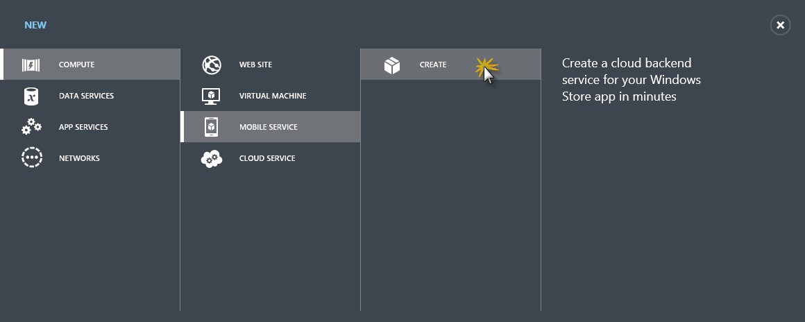
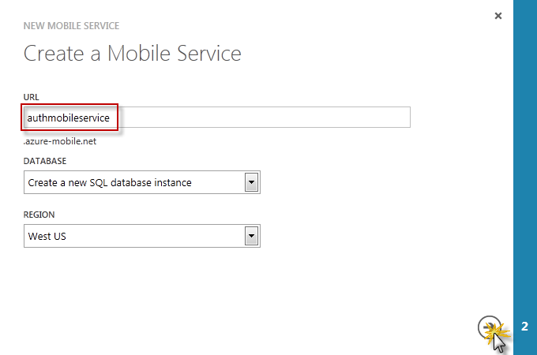
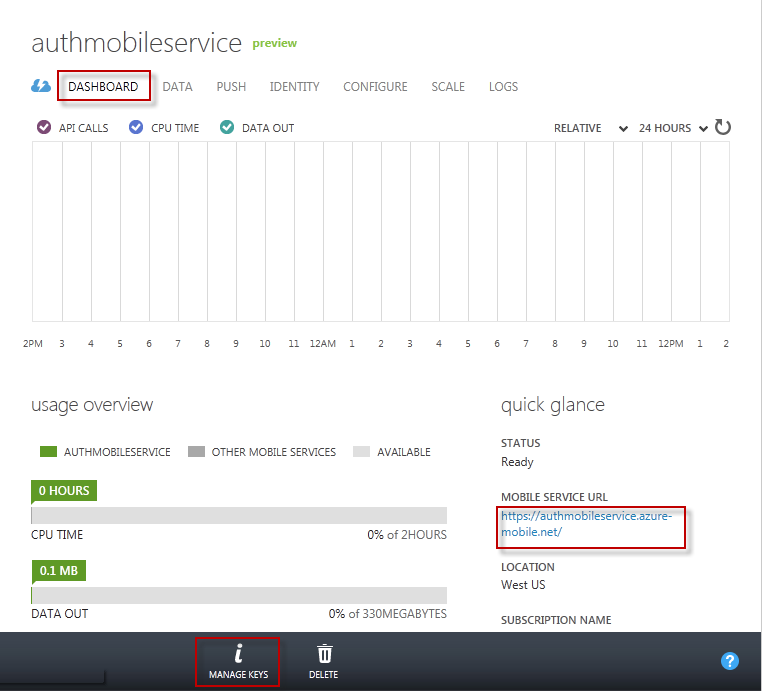
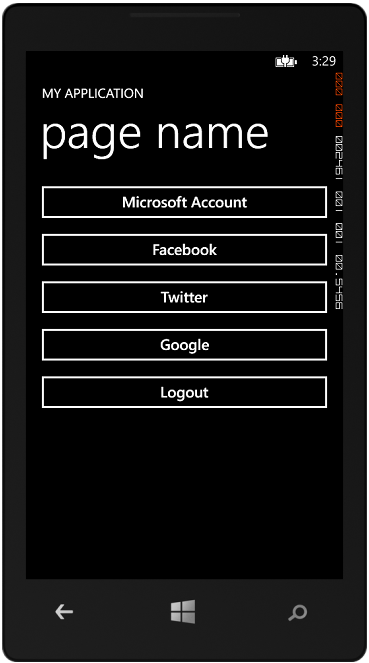

- Visual Studio 2012 Express for Windows 8
- and a Windows Azure account (get the Free Trial)
WP Authenticate Microsoft Account, Facebook, Twitter & Google w/ Mobile Services
Authenticate Windows Phone app users using Microsoft Account, Facebook, Twitter and Google with Windows Azure Mobile Services
Introduction
This sample demonstrates how you can easily wire up your Windows Phone application to provide login capabilities ilities for your users to authenticate against well know social identity provides such as Microsoft Account, Facebook, Twitter and Google using Windows Azure Mobile Services.
Prerequisites
Building the Sample
Follow these steps to set up the sample.
Setting up the Cloud Environment
-
Create a new Mobile Service from the Windows Azure Management Portal.
To do this, log on to the Windows Azure Management Portal, navigate to Mobile Services and click New.

Expand Compute | Mobile Service, and click Create.

This displays the New Mobile Service dialog.
In the Create a mobile service page, type a subdomain name for the new mobile service in the URL textbox and wait for name verification. Once name verification completes, select Create a new SQL Database in the Database dropdown list and click the right arrow button to go to the next page.

This displays the Specify database settings page.
Note: If you already have a database in the same region as the new mobile service, you can instead choose Use existing Database and then select that database. The use of a database in a different region is not recommended because of additional bandwidth costs and higher latencies.
In Name, type the name of the new database, then type Login Name, which is the administrator login name for the new SQL Database server. Type and confirm the password, and select the check box to complete the process.

Note: If there is a mismatch or the password you supply does not meet the minimum requirements, a warning is displayed.
You have now created a new mobile service that can be used by your mobile apps.
-
Register the sample application for authentication and configure Mobile Services. To do this, follow the instructions in http://code.msdn.microsoft.com/WP-Authenticate-Account-c7e0ef84/https://www.windowsazure.com/en-us/develop/mobile/tutorials/get-started-with-users-dotnet/#register.
Note: The link above provides details on how to register the sample application with Microsoft Account, Facebook, Twitter and Google identity providers, and explains how to register the provider-generated client secret with Mobile Services.
Setting up the Local Environment
-
Configure the Mobile Service URL and access key.
Get the Mobile Service URL and Mobile Service Key values. Browse to your Mobile Service dashboard, copy the service URL and click Manage Keys on the bottom bar.

Mobile Service URL
Now copy the Application Key value.

-
In Visual Studio 2012 Express for Windows Phone, open the Authentication.sln solution
-
Right Click on the Authentication project and select Manage Nuget Packages
-
In the Manage Nuget Packages Dialog change the dropdown from Stable Only > Include Prerelease and Search for WindowsAzure.MobileServices. Select it and click Install (Note: at the time of writing April 26, 2013. The PCL nuget for Mobile Services was pre-release. By the time you are reading this it may already be released as stable)
-
Open the App.xaml.cs file
-
Add a using statement for the MobileServices namespace
-
-
Supply the URL and add a using statement application key from the mobile service in the MobileServiceClient constructor.
C#Edit|Removecsharpprivate static MobileServiceClient mobileService = new MobileServiceClient( "https://{YOUR-MOBILE-SERVICE-NAME}.azure-mobile.net/", "{YOUR-APPLICATION-KEY}");private static MobileServiceClient mobileService = new MobileServiceClient( "https://{YOUR-MOBILE-SERVICE-NAME}.azure-mobile.net/", "{YOUR-APPLICATION-KEY}");
-
Open the MainPage.xaml.cs file
-
Add a using statement for the MobileServices namespace
-
Update method OnBtnMicrosoftAccountClick to call LoginAsyncC#Edit|Removecsharp
//Call LoginAsync for the given Auth Provider await App.MobileService.LoginAsync(MobileServiceAuthenticationProvider.MicrosoftAccount); //Log the logged in userId txtStatus.Text = string.Format("Logged in with: {0}", App.MobileService.CurrentUser.UserId);//Call LoginAsync for the given Auth Provider await App.MobileService.LoginAsync(MobileServiceAuthenticationProvider.MicrosoftAccount); //Log the logged in userId txtStatus.Text = string.Format("Logged in with: {0}", App.MobileService.CurrentUser.UserId);
-
Update method OnBtnFacebookAccountClick to call LoginAsyncC#Edit|Removecsharp
//Call LoginAsync for the given Auth Provider await App.MobileService.LoginAsync(MobileServiceAuthenticationProvider.Facebook); //Log the logged in userId txtStatus.Text = string.Format("Logged in with: {0}", App.MobileService.CurrentUser.UserId);//Call LoginAsync for the given Auth Provider await App.MobileService.LoginAsync(MobileServiceAuthenticationProvider.Facebook); //Log the logged in userId txtStatus.Text = string.Format("Logged in with: {0}", App.MobileService.CurrentUser.UserId);
-
Update method OnBtnTwitterAccountClick to call LoginAsyncC#Edit|Removecsharp
//Call LoginAsync for the given Auth Provider await App.MobileService.LoginAsync(MobileServiceAuthenticationProvider.Twitter); //Log the logged in userId txtStatus.Text = string.Format("Logged in with: {0}", App.MobileService.CurrentUser.UserId);//Call LoginAsync for the given Auth Provider await App.MobileService.LoginAsync(MobileServiceAuthenticationProvider.Twitter); //Log the logged in userId txtStatus.Text = string.Format("Logged in with: {0}", App.MobileService.CurrentUser.UserId);
-
Update method OnBtnGoogleAccountClick to call LoginAsyncC#Edit|Removecsharp
//Call LoginAsync for the given Auth Provider await App.MobileService.LoginAsync(MobileServiceAuthenticationProvider.Google); //Log the logged in userId txtStatus.Text = string.Format("Logged in with: {0}", App.MobileService.CurrentUser.UserId);//Call LoginAsync for the given Auth Provider await App.MobileService.LoginAsync(MobileServiceAuthenticationProvider.Google); //Log the logged in userId txtStatus.Text = string.Format("Logged in with: {0}", App.MobileService.CurrentUser.UserId);
-
Update OnBtnLogoutClick to perform a logout operationC#Edit|Removecsharp
//If there is an authenticated user then logout if (App.MobileService.CurrentUser != null && App.MobileService.CurrentUser.UserId != null) App.MobileService.Logout();//If there is an authenticated user then logout if (App.MobileService.CurrentUser != null && App.MobileService.CurrentUser.UserId != null) App.MobileService.Logout();
Running the Sample
-
In Visual Studio, press the F5 key to run the application.
-
In the start page, Click on the button for the authentication scenario you wish to exercise.
 -
An authentication dialog box will be displayed prompting you to enter the credentials of the selected identity provider.

-
A consent message requesting access to the application is shown the first time you log in to your account. Click Authoriz
-
After the user is authenticated, the user id is shown in the output area.

- Click the Logout button to log the user out before trying out another identity provider.
If you cant find a specific Windows Azure Mobile Services scenaro using Windows Phone please feel free to reach out to me on Twitter via @cloudnick